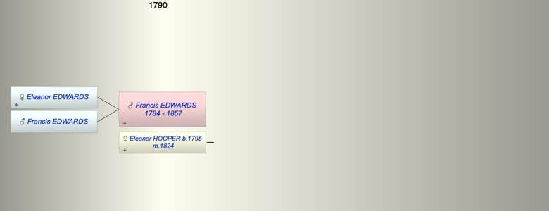

| [Index] |
| Francis EDWARDS (1784 - 1857) |
|  |
| b. 1784 |
| m. 05 Jan 1824 Eleanor HOOPER (1795 - ) at Southwark |
| d. 1857 aged 73 |
| Children (2): |
| Eleanor EDWARDS |
| Francis EDWARDS |
| Events in Francis EDWARDS (1784 - 1857)'s life | |||||
| Date | Age | Event | Place | Notes | Src |
| 1784 | Francis EDWARDS was born | ||||
| 05 Jan 1824 | 40 | Married Eleanor HOOPER (aged 29) | Southwark | Note 1 | |
| 1857 | 73 | Francis EDWARDS died | |||
| Note 1: married at St Saviour, Southwark ex FS, date also given as 8th Jan |
| Personal Notes: |
| Francis Edwards (1784–1857) of 17 Hart Street Bloomsbury was a celebrated architect https://en.wikipedia.org/wiki/Francis_Edwards_(architect). His will (ex Genealogist PROB 11/2257/178 refers to his wife and his son Francis and his daughter Eleanor. The daughter Eleanor Edwards married Thomas Parker Hart, farmer at St Pancras 8 Dec 1857 linking the Hart and Edwards Families cited in the will of Sarah Hope Curling. It is very likely that Francis Edward’s wife was Eleanor Hooper and they married at Southwark 8 (5) Jan 1824. Eleanor Hooper was the sister of Thomas Hooper who married Sarah Hope Curling’s sister Susanna. |
| Created on a Mac™ using iFamily for Mac™ on 8 Oct 2023 |